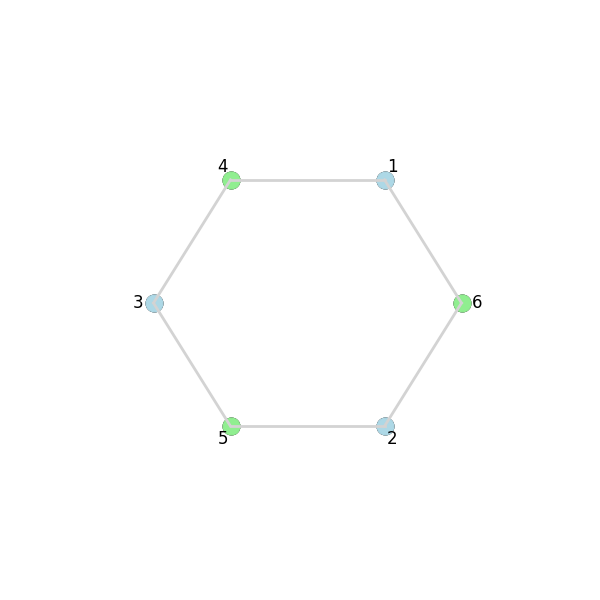

AI-driven Decision-making Model Empowers Grassroots Governance (excerpts)
Abstract: The article presents a proposal for an AI-driven decision-making model to enhance grassroots governance and democratic decision-making. It discusses the complexity of community decision-making and the challenges faced, such as information asymmetry and emotional biases. The proposed model aims to amplify the voices of the common people, enhance information transparency, and advance deliberative democracy. The model utilizes an AI agent for collecting opinions, mediating discussions, and providing policy consultation. A simulation was conducted with the Fudan University campus community, demonstrating the model's effectiveness in finding agreement-optimized solution.
[!info] The following content is the opinion exchanging session of our research. We will focus on the algorithm detail.
The following content is the opinion exchanging session of our research. We will focus on the algorithm detail.
In the opinion exchanging session, CMs (community members) will send their value card generated to others and ranking cards received from others. Each CM send cards to 2 other CMs and rank 2 cards from 2 other CMs. The ranking instruction goes like this: "which opinion of the cards do you prefer"?
The hard problem is how do we assign cards. To do this, we embed all the value cards into fixed length vector in order to capture their semantic meaning. Then we list some principals that's reasonable to follow: 1. Diversity. The cards that CM receives should be distinct from his/her own. 2. Fairness. The cards that CM receives should better be equally distant from his/her own.
My initial thought is that we can group people into 3-groups, and the card exchanging goes internally in this group. And the principal for composing the 3-groups is to maximize the sum of the area of the triangles. This is a valid objective but hard to compute.
Then I think about finding a distance transformation function $f: \mathbb{R}{\geq 0} \rightarrow \mathbb{R}$ that satisfies:
$$ \displaystyle{ \begin{aligned}& \text{given } d { 1 } + d + d { 3 } = C \ & \text{minimum of } f \left( d \right) + f \left( d { 2 } \right) + f \left( d $$} \right) \text{ is achieved if and only if minimum of } S _{ A B C } \text{ is achieved}\end{aligned}
And it's easy to see the minimum of $S_{ABC}$ is achieved if and only if $d_1=d_2=d_3$. By Jason inequality, convex functions satisfy this. And I also want $f$ to be decreasing, so
$$ f>0, f'<0, f''>0 $$
Is the condition for a proper $f$. I finally made the choice $f(d)=e^{-d}$, which is simple and numerically stable.
Set $D$ as the original distance matrix and $W$ the weight matrix for edges. Then we can formulate our card exchanging assignment problem as:
$$ \displaystyle{ \begin{aligned}& \text{minimize } \sum { i < j } w e ^{ - d { i j } } \ & \sum w { i j } = 2 , \forall i \ & w $$} \in \left[ 0 , 1 \right] , \forall i , j\end{aligned}
Notice that it doesn't group CMs into triangles - but they group them into circles with length $\geq 3$ according to the classic 2-factor theorem. And to exchange cards we just let the CM send and receive cards to his/her two neighbors. This is now a maximal weight 2-matching problem for a complete graph. I haven't yet found an efficient combinatorial method to tackle this (and this is an important to-do), so I choose to use a general linear programming solver and see how it performs.
We generate 50 random points in an $N$-dimensional Euclidean space as simulated opinion card embeddings and run our algorithm on them.
By visualizing the results, we could find the interesting distinction between different dimensions (2-dimensional vs 100-dimensional) Where the 2-dimensional case has several distinct circles but the 100-dimensional case has only a big Hamilton loop. The computation takes 0.03 seconds and doesn't seem to grow exponentially. Recall that each connected points in the generated graphs are actually far away in the original space.
.png)
-1.png)
Todo
- [ ] Invent a benchmark
How to Let it Run Multiple Rounds?
The above formulation is Integer Linear Programming (ILP) which is generally NP-hard. When dealing with multiple rounds, we need to set $w_(ij)=0$ as extra condition for (i, j) paired appeared in the previous rounds. But here's the problem: can we still find a feasible solution? Consider the following case:
In the second round, a solution have to be look like a circle:

Then a third round will become impossible (consider why).
And another flaw is that this algorithm is greedy - which means it optimizes each round independently. It doesn't consider the long-term effects on the feasibility of subsequent rounds.
We know think of an alternative formulation that can hopefully solve the problems above.
$$ \displaystyle{ \begin{aligned}& \text{minimize } \sum { i < j } w e ^{ - d { i j } } \ & \sum $$} w _{ i j } \geq K , \forall i\end{aligned}
Issue: this formulation is vulnerable to collapse if a single node is significantly distant from all other nodes. Because the constraint $\sum_{j} w_{ij} \geq K$ only requires a minimum number of connections, the algorithm might prioritize connecting all nodes to the outlier to minimize the overall cost function (which is heavily influenced by the large distances to the outlier). This would result in a star-like graph centered on the outlier, which isn't a desirable outcome.
$$ \displaystyle{ \begin{aligned}& \text{minimize } \sum { i < j } w ^2 e ^{ - d { i j } } \ & \sum $$} w _{ i j } \geq K , \forall i\end{aligned}
Issue: This formulation encourages the creation of many weak connections (small $w_{ij}$ values) rather than a few strong ones. Squaring the weights penalizes larger weights more heavily, leading to a solution where the algorithm distributes small weights across numerous edges to satisfy the constraint $\sum_{j} w_{i j} \geq K$ without incurring a large cost from any single edge. This might result in a highly connected but "weakly" connected graph where no individual edge represents a significant opinion exchange.
$$ \displaystyle{ \begin{aligned}& \text{minimize } \sum { i < j } (w + w { i j }^2) e ^{ - d \ & \sum } { j } w $$} \geq K , \forall i\end{aligned}
This is a slightly better option!
This formulation can be understood as a combination of the previous two. The term $w_{ij}$ encourages stronger connections, while $w_{ij}^2$ still penalizes very large weights (but less aggressively than before). This aims to strike a balance between creating a few strong connections and allowing for more numerous weaker connections when necessary to satisfy the degree constraint. By combining both terms there's is less change for collapses and star formation.
Now, several strategies can be used to determine a suitable threshold to build actual edges from $w_{ij}$:
-
Adaptive Threshold: The threshold is dynamically adjusted based on the weight distribution in each round. For example, one could set $T$ to be the median, mean, or a specific percentile of the weights. This allows the algorithm to adapt to changes in the opinion landscape over time.
-
Connectivity-Based Threshold: The threshold is chosen to ensure that the resulting graph satisfies certain connectivity properties, such as a minimum average degree or a specific number of connected components. This approach helps to ensure a functional exchange structure.
Once the threshold is selected, the edge formation process involves comparing each weight $w_{ij}$ to $T$. If $w_{ij} > T$, an edge is formed between nodes $i$ and $j$. If $w_{ij} \leq T$, the edge is not included in the graph. This binarization yields a graph representing the final assignment of card exchanges.

Average distance of ALL possible edges: 0.4834
Problem solved successfully (status: optimal). Objective value: 28.780768175095037
Using threshold T = 0.1094 (90th percentile of weights)
Number of edges above threshold: 123
Average distance of SELECTED edges: 0.7776
Average degree of thresholded graph: 4.92
Number of connected components in thresholded graph: 4
We notice that the average distance of SELECTED edges is significantly higher than average distance of ALL possible edges. Let's summarize the advantages again: - Efficient convex optimization - Arbitrarily many card exchange in a single round
To avoid orphan, we can set a lower bound for each node's degree when selecting edges. To further avoid star-like nodes, we can set an upper bound for the sum of edge weights of each node. But for now we just stick to this simple formulation.
Code
2-matching Formulation
```python fold
xx
import numpy as np import pulp import networkx as nx import matplotlib.pyplot as plt import itertools
Generate 100 random vectors in 100-dimensional Euclidean space
n = 50 dimension = 2 vectors = np.random.rand(n, dimension)
Compute the 100x100 distance matrix
D = np.linalg.norm(vectors[:, np.newaxis] - vectors, axis=2)
Apply e^(-x) to each element of the distance matrix
W = np.exp(-D)
Generate all possible edges (upper triangle without the diagonal)
edges = list(itertools.combinations(range(n), 2))
Create a PuLP problem
prob = pulp.LpProblem("MaximizeOpinionExchanging", pulp.LpMinimize)
Decision variables: 1 if edge is selected, 0 otherwise
x = pulp.LpVariable.dicts("x", edges, lowBound=0, upBound=1, cat=pulp.LpBinary)
Objective function: minimize sum of e^(-d_ij) * x_ij
prob += pulp.lpSum(W[i, j] * x[(i, j)] for (i, j) in edges)
Constraints: each node must have exactly 2 edges
for s in range(n): prob += pulp.lpSum(x[(i, j)] for (i, j) in edges if i == s or j == s) == 2
Debug
print(prob)
exit()
Solve the problem
prob.solve()
Get the results
optimized_edges = [(i, j) for (i, j) in edges if pulp.value(x[(i, j)]) == 1]
Construct the resulting graph
H = nx.Graph() H.add_nodes_from(range(n)) H.add_edges_from(optimized_edges)
Ensure we form cycles (each node degree should be exactly 2)
degree_check = all(degree == 2 for node, degree in H.degree()) cycles = list(nx.cycle_basis(H)) if degree_check else []
Plot the resulting graph if valid
if degree_check: pos = nx.spring_layout(H) nx.draw(H, pos, with_labels=True, node_size=300, node_color='skyblue', edge_color='gray') plt.show()
Output the results
print(degree_check, len(cycles), cycles[:5]) # Checking degree condition and sample of cycles
#### Convex Optimization Formulation
```python fold
import numpy as np
import cvxpy as cp # Use cvxpy
import networkx as nx
import matplotlib.pyplot as plt
import itertools
# --- Setup: Generate data (Same as before) ---
n = 50
dimension = 2 # You can change this dimension
vectors = np.random.rand(n, dimension)
# Compute the 50x50 distance matrix
D = np.linalg.norm(vectors[:, np.newaxis] - vectors, axis=2)
# --- Calculate Average Distance for ALL Possible Edges ---
if n >= 2:
# Sum distances in the upper triangle (excluding diagonal)
total_distance_all = np.sum(np.triu(D, k=1))
num_all_edges = n * (n - 1) / 2
if num_all_edges > 0:
avg_distance_all = total_distance_all / num_all_edges
print(f"Average distance of ALL possible edges: {avg_distance_all:.4f}")
else:
print("Not enough nodes to form edges.")
else:
print("Not enough nodes to calculate average distance.")
# ---------------------------------------------------------
# Generate edges (no self-loops due to combinations)
edges = list(itertools.combinations(range(n), 2))
# Create a mapping from edge tuple (i, j) to a linear index for cvxpy variable vector
edge_map = {edge: i for i, edge in enumerate(edges)}
num_edges = len(edges)
# --- CVXPY Optimization ---
# 1. Define Decision Variables
w = cp.Variable(num_edges, name="w")
# 2. Define the Objective Function
coeffs = np.array([np.exp(-D[i, j]) for (i, j) in edges])
objective_term1 = cp.sum(cp.multiply(w, coeffs))
objective_term2 = cp.sum(cp.multiply(cp.square(w), coeffs))
objective = cp.Minimize(objective_term1 + objective_term2)
# 3. Define Constraints
K = 2
constraints = []
constraints += [w >= 0, w <= 1]
for node_idx in range(n):
connected_edge_indices = [
edge_map[edge] for edge in edges
if edge[0] == node_idx or edge[1] == node_idx
]
if connected_edge_indices:
constraints.append(cp.sum(w[connected_edge_indices]) >= K)
elif K > 0 :
print(f"Warning: Node {node_idx} has no edges. Constraint sum(w) >= {K} cannot be satisfied.")
# 4. Create and Solve the Problem
problem = cp.Problem(objective, constraints)
problem.solve(verbose=False)
# --- Post-processing and Visualization ---
# Check solver status
if problem.status in [cp.OPTIMAL, cp.OPTIMAL_INACCURATE]:
print(f"Problem solved successfully (status: {problem.status}). Objective value: {problem.value}")
solved_weights = w.value
if solved_weights is None:
print("Error: Solver reported success, but weights are None.")
weights = {}
else:
weights = {edge: solved_weights[edge_map[edge]] for edge in edges}
# Determine the threshold T (e.g., 90th percentile)
if weights:
weight_values = list(weights.values())
if weight_values:
if weight_values: # Check again after filtering
T = np.percentile(weight_values, 90)
else:
T = 0
print("Warning: All weights are close to zero.")
else:
T = 0
print("Warning: No weights found in the solution despite solver success.")
else:
T = 0
print("Warning: Weights dictionary is empty.")
print(f"Using threshold T = {T:.4f} (90th percentile of weights)")
# Build the graph based on the threshold T
H = nx.Graph()
H.add_nodes_from(range(n))
if weights:
selected_edges = [(i, j) for (i, j) in edges if (i, j) in weights and weights[(i, j)] > T]
H.add_edges_from(selected_edges)
else:
selected_edges = []
num_selected_edges = len(selected_edges)
print(f"Number of edges above threshold: {num_selected_edges}")
# --- Calculate Average Distance for SELECTED Edges ---
if num_selected_edges > 0:
total_distance_selected = sum(D[i, j] for (i, j) in selected_edges)
avg_distance_selected = total_distance_selected / num_selected_edges
print(f"Average distance of SELECTED edges: {avg_distance_selected:.4f}")
else:
print("No edges were selected above the threshold.")
# -----------------------------------------------------
# Print average degree
if H.number_of_nodes() > 0:
degrees = [val for (node, val) in H.degree()]
if degrees:
print(f"Average degree of thresholded graph: {np.mean(degrees):.2f}")
else:
print("Thresholded graph has nodes but no edges.")
else:
print("Graph has no nodes.")
# Check connected components
num_connected_components = nx.number_connected_components(H)
print(f"Number of connected components in thresholded graph: {num_connected_components}")
# Visualize the graph
plt.figure(figsize=(10, 10))
pos = nx.spring_layout(H, k=0.5)
nx.draw(H, pos, with_labels=True, node_size=300, node_color='skyblue', edge_color='gray', font_size=8)
plt.title(f"Graph from Thresholded Weights (T={T:.4f}, K={K}, Dim={dimension})")
plt.savefig("graph.png")
plt.close()
elif problem.status in [cp.INFEASIBLE, cp.INFEASIBLE_INACCURATE]:
print(f"Problem is infeasible (status: {problem.status}). Check constraints, especially K={K}.")
elif problem.status in [cp.UNBOUNDED, cp.UNBOUNDED_INACCURATE]:
print(f"Problem is unbounded (status: {problem.status}).")
else:
print(f"Solver failed with status: {problem.status}")